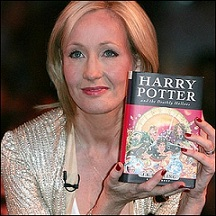
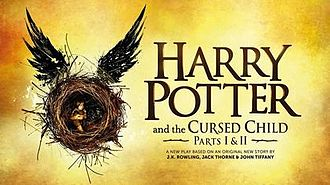

J. K. Rowling
Joanne "Jo" Rowling, OBE, FRSL (/ˈroʊlɪŋ/; born 31 July 1965), pen names J. K. Rowling and Robert Galbraith, is a British novelist, screenwriter and film producer best known as the author of the Harry Potter fantasy series. The books have gained worldwide attention, won multiple awards, and sold more than 400 million copies.[1] They have become the best-selling book series in history[2] and been the basis for a series of films over which Rowling had overall approval on the scripts[3] and maintained creative control by serving as a producer on the final instalment
Honours & Awards
J.K. Rowling has received many honours and awards, including:
- Author of the Year and Lifetime Achievement Award, British Book Awards, 1999 and 2008
- Booksellers Association Author of the Year, 1998 and 1999
- Commencement speaker, Harvard University, USA, 2008
- The Edinburgh Award, 2008
- James Joyce Award, University College Dublin, 2008
- South Bank Show Award for Outstanding Achievement, 2008
- Chevalier de la Legion d’Honneur: France, 2009
- Hans Christian Andersen Award, Denmark, 2010
Honorary Degrees from the University of Exeter, University of St Andrews, Napier University, University of Edinburgh, Dartmouth College USA, Harvard University USA, University of Aberdeen.
Her New Book
Harry Potter and the Cursed Child Parts I & II:
Harry Potter and the Cursed Child is a two-part West End stage play written by Jack Thorne and based on an original new story by Thorne, J.K. Rowling, and John Tiffany.[1] Previews of the play began at the Palace Theatre, London on 7 June 2016,[2] and it officially premiered on 30 July 2016. As the first brand-new Wizarding World story in nearly a decade, the rehearsal script, which was not a novelization of the play,[3] was released on 18 November 2015 and became the official eighth Harry Potter story, specifically involving the timeline of an older Harry James Potter and his struggles in British magical society. The play takes place mainly in the year 2020, but begins in 2017.[4] The story begins nineteen years after the events of Harry Potter and the Deathly Hallows and follows Harry Potter, now a Ministry of Magic employee, and his younger son Albus Severus Potter as a dark chain of events unfolds.
For more information about J. K. Rowling, visit JKRowling